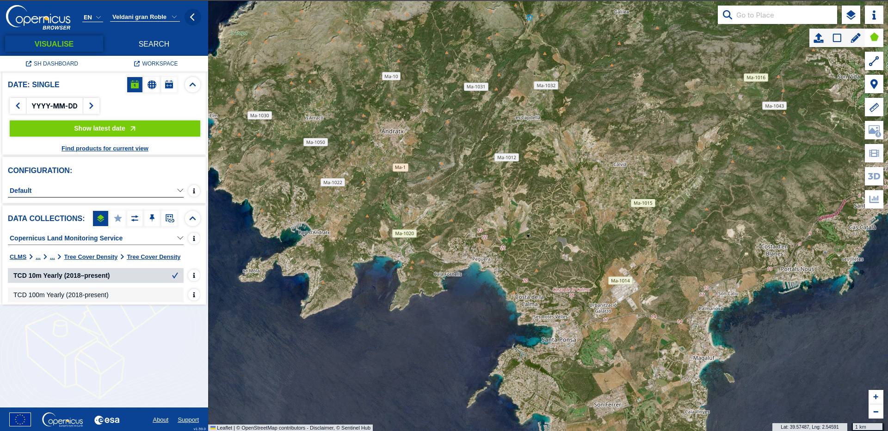
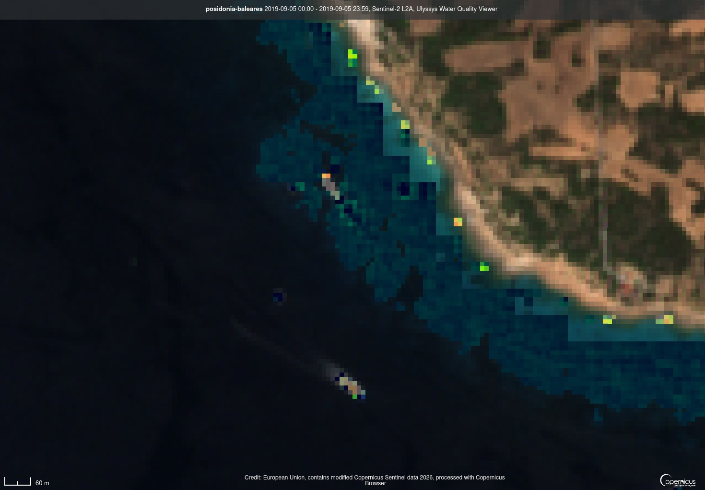

v0.5.3 · Beta abierta
Cómputo distribuido para monitorización ambiental
Contribuye con capacidad de cálculo ociosa de tu máquina a proyectos verificados de análisis de imágenes satélite y biodiversidad. Sin mineros. Sin blockchain. Sin humo.
Cómo funciona
Tres pasos. Sin instalar nada en consola.
Crea cuenta
Email y contraseña. Un solo usuario por máquina. Sin tarjeta, sin tracking.
Recibe tareas
La GUI o la APK reciben una tarea del servidor (NDVI, Posidonia, biodiversidad) basada en datos Copernicus. Tú decides si la ejecutas.
Gana créditos
Cada tarea resuelta concede crédito Eco'clock. Sin valor monetario, pero con valor simbólico.
De dónde salen las tareas
No son tareas al azar. El servidor prepara trabajos a partir de datos abiertos de Copernicus (ESA), sobre todo imágenes y productos derivados de satélite. Tu máquina calcula un resultado verificable; tú ganas créditos Eco'clock simbólicos.


Contains modified Copernicus Sentinel / CLMS data. Vista de ejemplo centrada en Mallorca (Baleares). Si el catálogo CDSE no responde, el servidor puede generar tareas de relleno del mismo tipo; el cliente siempre calcula un output validable (NDVI, superficie, métricas, etc.). Abrir Copernicus Browser ↗
Top nodos ciudadanos
Los 5 equipos con más miembros en la red. Únete o crea el tuyo desde la app o la GUI.
Cargando ranking…
Actualizado al cargar la página · Solo nombre, logo y número de miembros
¿Te animas a la beta?
Buscamos 5-50 beta-testers que se instalen el cliente, lo prueben 10 minutos y nos den feedback. Nos interesa especialmente cómo falla, no cómo funciona.